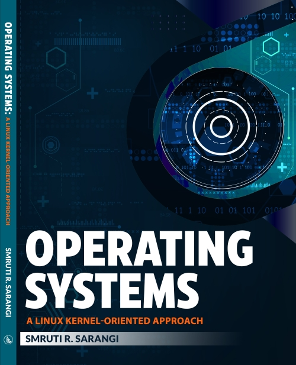

Creative Commons CC-BY-ND 4.0 license
|  |
|
Homeworks/Lab Assignments:
| Easy | Hard | |
| A1 | Link | Link |
| A2 | Link | Link |
| A3 | Link | Link |
Guide to Linux kernel hacking by Abhishek Safui.
Lectures and Slides:
| Chapter |
Topics |
Details |
| 1 | Introduction | What is an OS? Overview of the Linux kernel's codebase Overview of the book |
| 2 | Basics of Computer Architecture | 1. Privileged and non-privileged registers; system calls, exceptions and inerrupts; context switching |
| 2. Timer chips and basic x86 assembly |
||
References |
||
| Static and dynamic linking | Static and dynamic linking Links: link1, link2, link3 [very detailed] |
|
| Processes and related data structures | pids, namespaces, pid structure, radix trees, and bitmaps |
|
| Interrupt handling and signals | IRQs, LAPIC, I/O APIC, IRQ domains, the irq_desc data structure link | |
| Spin locks and Mutexes | Additional reference: pointer to the paper on ticket locks and MCS locks [Paper] Algorithms for Scalable Synchronization on Shared-Memory Multiprocessors John M. Mellor-Crummey, Michael L. Scott, ACM TOCS, 1991 [link] |
|
| Introduction to Scheduling | ||
| Real Time Systems | EDF RMS [Paper] The Rate Monotonic Scheduling Algorithm: Event Characterization and Average Case Behavior, Lehoczky, Sha, and Ding. IEEE Real Time Systems Symposium, 1989 DMS[Paper] Deadline Monotonic Scheduling, Audsley, 1990 |
|
| Security | Code for the buffer overflow attack: link Linux page directory and page access |
|
| I/O Systems: Introduction | I/O Protocols
|
|
Storage devices |
||
| Kernel memory allocators | |
|